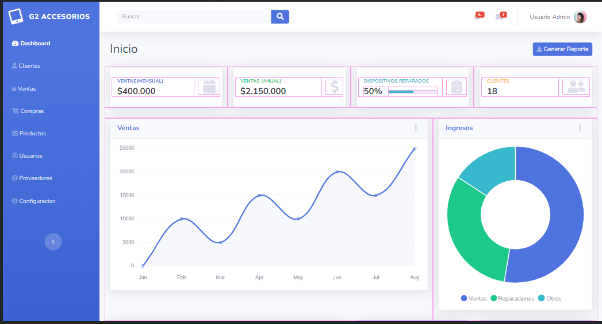

En la propuesta de vista para el sistema de G2 accesorios tenemos apartados como
El login es una parte esencial de nuestro sistema, ya que permite a los usuarios autenticarse y acceder de manera segura a todas las funcionalidades disponibles.Cuando los usuarios visitan la plataforma este le solicita que ingresen su informacion de inicio de sesion para verificar su identidad y asi poder acceder a los datos y funciones del sistema.
Para iniciar sesion al usuario solo se le pide que ingresen dos datos correspondientes Dichos datos son: El nombre de usuario y la contrasena correspondiente
El dashboard es una parte central del sistema ya que brinda una versión general de los principales indicadores y estadísticas claves del negocio. Al acceder al dashboard encontrarás una serie de cuadros y gráficos que resumen la información esencial para la toma de decisiones informadas. En el primer cuadro muestra ventas mensuales. En el segundo cuadro muestra ventas anuales. En el tercer cuadro nos brinda información de los dispositivos que hemos podido reparar en relación a los dispositivos atendidos. En el cuarto cuadro nos muestra la cantidad de clientes, lo cual proporciona una idea clara de los clientes que hemos podido mantener. Además de los cuadros, el dashboard presenta dos gráficos que nos ayudan a visualizar mejor los ingresos y su distribución.
